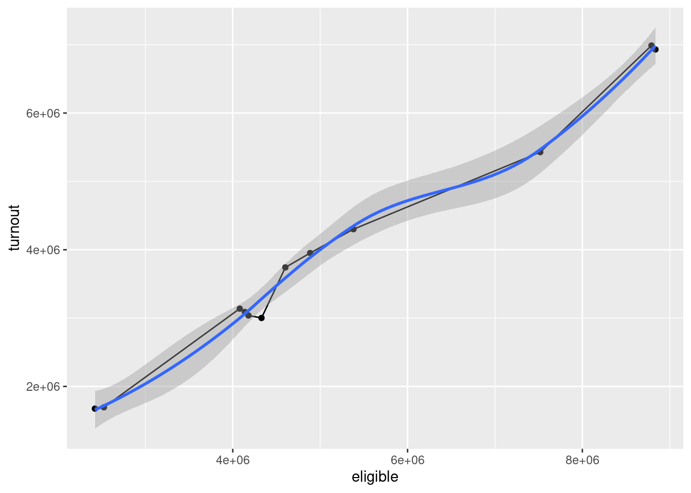
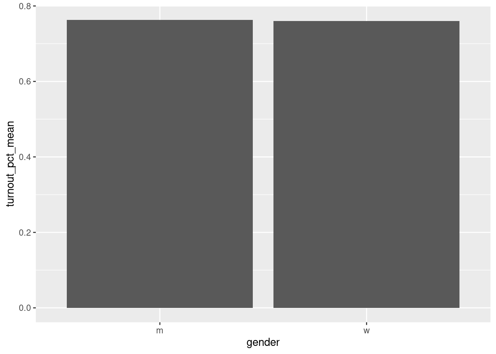
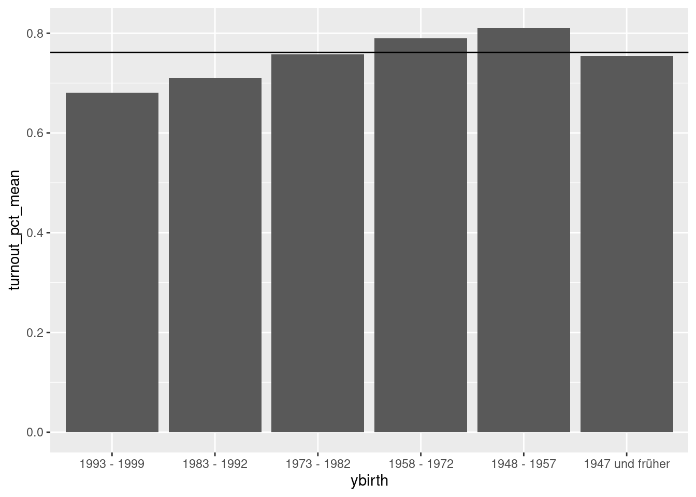
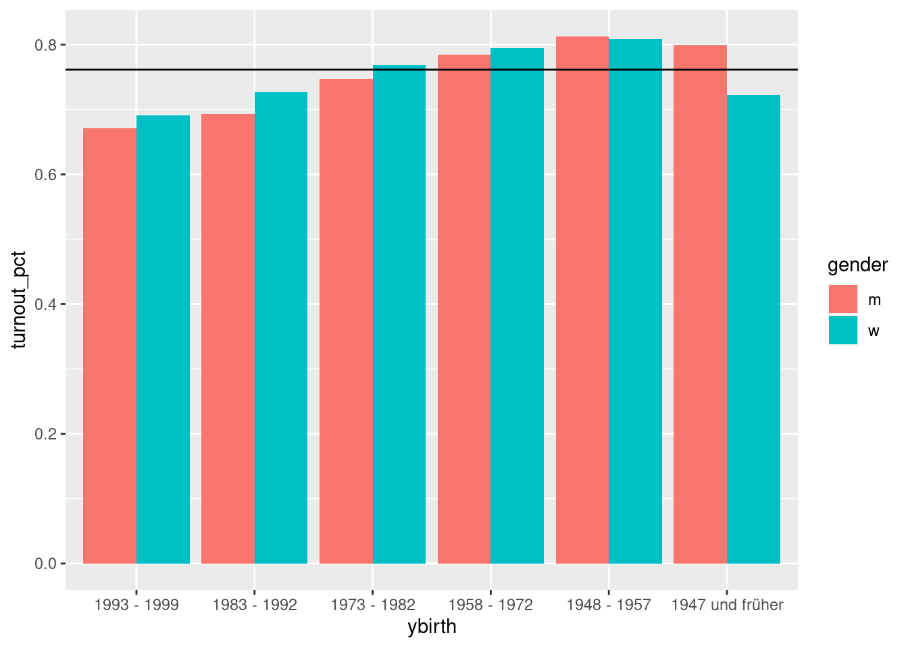
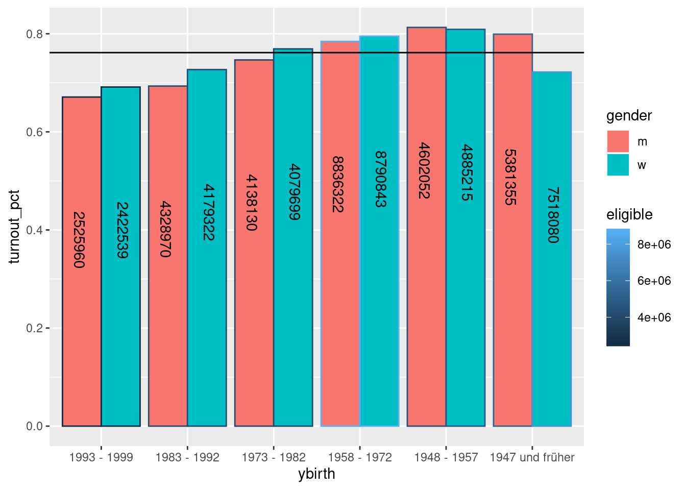
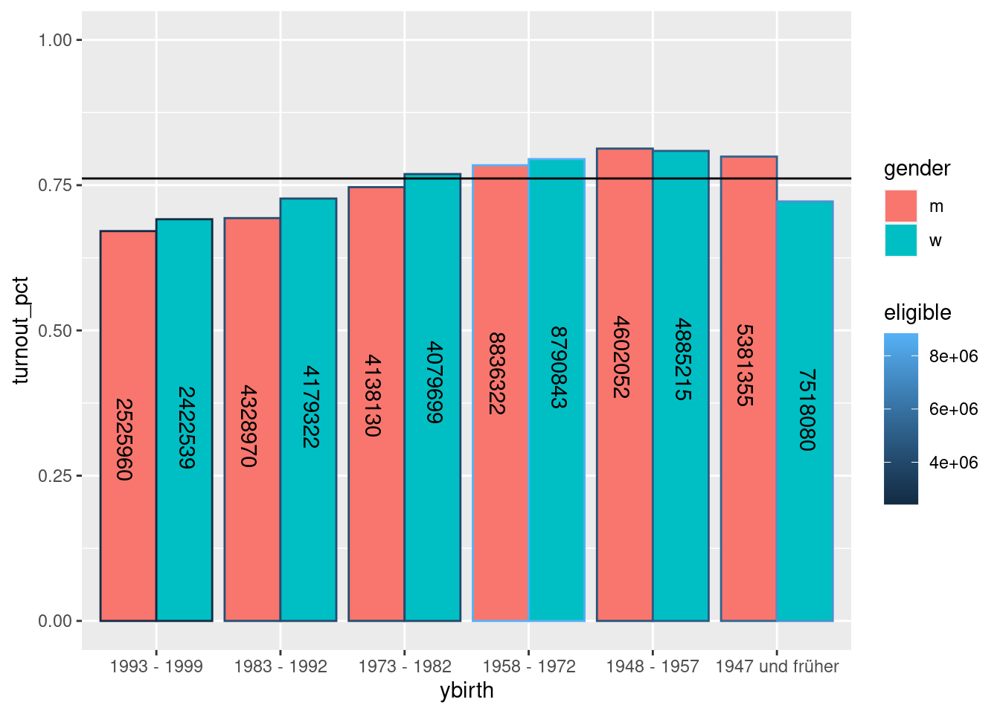

10 Parsing csv files with readr
10.1 CSV files
By now we have a good grip on how to scrape the contents of typical HTML documents, like tables, lists or textual contents. In some cases, the data we are interested may also be provided as data files which can directly be used in R, like XML, JSON or CSV files. In these cases, it is often the more efficient approach to just download such a file instead of scraping the data directly from the site. Also, the data in the file may not even be displayed in full on the website itself and downloading the data file thus may open up additional analytical possibilities.
One of the more widespread types of data files, are CSV files – comma-separated values. While they are limited to the display of two-dimensional tables, their simplicity and portability makes them one of the most used formats for this type of data. You can open and write CSV files with statistical software, spreadsheet software like Excel and with even the most basic text editor.
A simple CSV file may look like this:
column1, column2, column3
data1_1, data1_2, data1_3
data2_1, data2_2, data2_3
data3_1, data3_2, data3_3In essence, CSV files are tables. The rows of the table are delimited by line breaks, the columns by commas.
Often the first row represents the column names, as in the example above
(column1, column2, column3). Be aware, that this is not necessarily always the
case. A CSV file may not contain any column names at all, and start with a first
row of data cells. This is a vital difference when it comes to parsing the file,
as discussed further below. Like every row, the row of column names, if present,
is delimited by a line break.
10.2 Parsing a CSV file
To convert the data contained in the CSV file into a format we can use for data
analysis we have to parse it first. The function used for parsing
“understands” the representation of a table in the CSV syntax, can discern
column names from data cells, assigns data cells to the correct rows and columns
and returns an R object representing the table. read.csv() from base R returns
a data frame while read_csv() from the readr package, which we will use here,
returns a tibble.
As readr is part of the core tidyverse we can just load the tidyverse package. We will also need rvest soon, so let us begin with loading both libraries.
library(tidyverse)
library(rvest)The readr function read_csv() takes a CSV file as it’s first argument. To test
it, we can also use literal data for the file argument. So we can pass the
example defined above as a string – contained in " – as the fileargument.
We won’t do this much in practice, but it serves as a good first example.
read_csv(
"column1, column2, column3
data1_1, data1_2, data1_3
data2_1, data2_2, data2_3
data3_1, data3_2, data3_3"
)
## # A tibble: 3 x 3
## column1 column2 column3
## <chr> <chr> <chr>
## 1 data1_1 data1_2 data1_3
## 2 data2_1 data2_2 data2_3
## 3 data3_1 data3_2 data3_3read_csv() guesses the column types by the data entered. Here all three
columns were automatically defined as character vectors. Automatic guessing
works reliably in most situations. Let’s try a CSV with multiple different
column types:
read_csv(
"name, age, size, retired
Peter, 42, 1.68, FALSE
Paul, 84, 1.82, TRUE
Mary, 24, 1.74, FALSE"
)
## # A tibble: 3 x 4
## name age size retired
## <chr> <dbl> <dbl> <lgl>
## 1 Peter 42 1.68 FALSE
## 2 Paul 84 1.82 TRUE
## 3 Mary 24 1.74 FALSEread_csv() correctly guessed that the first column is of type character, the
third of the type double and the fourth is a logical vector. It also guessed
that the second column should be of the type double, i.e. floating point
numbers. This will do, but we could redefine this vector as integer manually by
using the col_types argument. This will not be necessary in most situations
but could increase computational speed with very large datasets, as integers can
be saved more efficiently. More on the definition of column types can be found
in the help file.
What happens when we have CSV data without column names defined in the first line?
read_csv(
"Peter, 42, 1.68, FALSE
Paul, 84, 1.82, TRUE
Mary, 24, 1.74, FALSE"
)
## # A tibble: 2 x 4
## Peter `42` `1.68` `FALSE`
## <chr> <dbl> <dbl> <lgl>
## 1 Paul 84 1.82 TRUE
## 2 Mary 24 1.74 FALSEread_csv() can not by itself discern if the authors of the CSV file intended
the first line to be used for names or not. If there are no column names in the
CSV data, as in this case, we have to explicitly tell read_csv() not to use
the first line for column names ourselves. We can do this by specifying the
col_names() argument as FALSE, instead of the default TRUE. In this case,
read_csv() chooses default names for the columns, which we can change later on.
read_csv(
"Peter, 42, 1.68, FALSE
Paul, 84, 1.82, TRUE
Mary, 24, 1.74, FALSE",
col_names = FALSE)
## # A tibble: 3 x 4
## X1 X2 X3 X4
## <chr> <dbl> <dbl> <lgl>
## 1 Peter 42 1.68 FALSE
## 2 Paul 84 1.82 TRUE
## 3 Mary 24 1.74 FALSE10.2.1 Running example
Let us look at some real CSV files to download, parse and use as running examples for data transformation and visualization in the remaining chapter.
The website https://www.bundeswahlleiter.de/bundestagswahlen/2017/ergebnisse/repraesentative-wahlstatistik.html holds multiple CSV files containing inferential statistics on the German federal election held in 2017. Among them, two files with statistics on the number of people eligible to vote and on the number that actually voted, both by binary gender and year of birth as well as additional indicators. Let our goal for this chapter be to analyse turnout by gender and age group graphically. To achieve this we will first need to download the two files and parse the CSV data.
10.2.1.1 Download files from within R
Your first instinct could be, to download the files manually and then parse them. This will work just fine but we could also download the files directly from our code. Due to the small number of files in this example, this may not even be the most efficient way, but when you start handling larger amounts of files or want to regularly update files, downloading them from within your code will be the safer and more efficient way.
Firstly, we should download the HTML file containing the links to the CSV files and extract the first two links following the header “Tabellen zur Weiterverwendung” using the tools we already have at our disposal. To understand the construction of the css selector, please have another look into chapter 5.1. Note that this is only one of many possible selectors that can achieve the goal of selecting the two links of interest.
website <- "https://www.bundeswahlleiter.de/bundestagswahlen/2017/ergebnisse/repraesentative-wahlstatistik.html" %>%
read_html()
a_nodes <- website %>%
html_nodes(css = "ul[style='list-style-type:none'] > li:first-child > a, ul[style='list-style-type:none'] > li:nth-child(2) > a")
a_nodes
## {xml_nodeset (2)}
## [1] <a data-file-extension="CSV" data-file-size="40,53 kB" title="Link zur CS ...
## [2] <a data-file-extension="CSV" data-file-size="68,82 kB" title="Link zur CS ...
links <- a_nodes %>%
html_attr(name = "href")
links
## [1] "../../../dam/jcr/38972966-dc3d-40fa-91d7-6599d913f5e9/btw17_rws_bw2.csv"
## [2] "../../../dam/jcr/a67208c0-2a2b-41aa-abb8-204b09e73b6b/btw17_rws_bst2.csv"We achieved our goal of extracting the links, but we also see, that these are
not complete as they are missing their base URL. This works on the website, as
the link is relative. To access the files directly, we need an absolute link
though. As before (sub section 7.2.2) we can use the function str_c()
to construct the complete URLs. If we give str_c() a vector as one of it’s
input arguments, the function will repeat the string connection for each element
in the vector. In this case we can ignore the “../../../” part of the link as it
will work regardless. To remove the part we could apply some of the functions
from the stringr package. For this we would need some basic knowledge in string
manipulation and regular expressions. If you want to further follow the road of
Web Scraping, you absolutely should acquire this knowledge at some point, but it
lies outside the scope of this introduction. A good starting point could be the
chapter on string from “R for Data Science” by Wickham and Grolemund:
https://r4ds.had.co.nz/strings.html
links <- str_c("https://www.bundeswahlleiter.de/", links)
links
## [1] "https://www.bundeswahlleiter.de/../../../dam/jcr/38972966-dc3d-40fa-91d7-6599d913f5e9/btw17_rws_bw2.csv"
## [2] "https://www.bundeswahlleiter.de/../../../dam/jcr/a67208c0-2a2b-41aa-abb8-204b09e73b6b/btw17_rws_bst2.csv"Now that we we have complete absolute links, we can download the files to our
hard drive. To achieve this, we can use the base R function download.file().
We have to specify an URL as it’s first argument as well as a path and file name
for the destfile argument. When no path is given, the file is saved in the
directory where your R script is located.
download.file(links[1], destfile = "eligible.csv")
download.file(links[2], destfile = "turnout.csv")We could also have used read_csv() to parse the CSV files directly from the
web. Still, sometimes it may be a good idea to download the files to our hard
drives, as we only have to do this once and thus decrease traffic for the server
and also increase the efficiency of our code. But this is only a benefit, if we
run the download once and not every time we rerun our script. So you should
maybe comment out the lines where the download occurs after it was successful.
In chapter (good_practice) we will discuss a way to do this more elegantly.
10.2.1.2 Parsing the csv files
Now we can parse the downloaded CSV files into R objects. But first let’s have a look at the CSV files. You can open them in a text editor of your choosing or directly in RStudio. Importing them into Excel or a similar spreadsheet software is not a valid option here, as we want to see the raw contents of the file and not a representation of the data.
Looking at eligible.csv we notice at least two things. Firstly, the delimiter
used here is not a comma but a semicolon. The default CSV style discussed above
is common in those countries where a “.” is used as the decimal point. Thus the
“,” is available to be used as a delimiter. In countries where the “,” is used
as a decimal point, it is not available and thus the “;” is used as a delimiter.
The function read_csv2() can be used in this case. Even more general is
read_delim() as the delimiting character can be defined as an argument.
Secondly, we see that the first 8 lines are neither column names or data but
contain comments on the CSV file itself. We have to tell read_csv2() so ignore
these lines. We could use the argument skip to tell R to ignore the first 8
lines. But as these comments are neatly introduced with an # we can use the
comment argument instead and specify the # as the identifier for comments,
which then will be ignored.
eligible_tbl <- read_csv2("eligible.csv", comment = "#")
## ℹ Using ',' as decimal and '.' as grouping mark. Use `read_delim()` for more control.
##
## ── Column specification ────────────────────────────────────────────────────────
## cols(
## Land = col_character(),
## Geschlecht = col_character(),
## Geburtsjahresgruppe = col_character(),
## Wahlberechtigte = col_double(),
## `Wahlberechtigte ohne Wahlscheinvermerk` = col_double(),
## `Wahlberechtigte mit Wahlscheinvermerk` = col_double(),
## `Wähler/-innen` = col_double(),
## `Wähler/-innen ohne Wahlschein` = col_double(),
## `Wähler/-innen mit Wahlschein` = col_double(),
## Wahlbeteiligung = col_double()
## )
eligible_tbl
## # A tibble: 627 x 10
## Land Geschlecht Geburtsjahresgr… Wahlberechtigte `Wahlberechtigt…
## <chr> <chr> <chr> <dbl> <dbl>
## 1 Bund Summe Summe 61688485 47595800
## 2 Bund Summe 1997 - 1999 2045501 1709333
## 3 Bund Summe 1993 - 1996 2902998 2295723
## 4 Bund Summe 1988 - 1992 4206014 3311417
## 5 Bund Summe 1983 - 1987 4302277 3455795
## 6 Bund Summe 1978 - 1982 4264347 3490155
## 7 Bund Summe 1973 - 1977 3953481 3273575
## 8 Bund Summe 1968 - 1972 5230865 4232089
## 9 Bund Summe 1958 - 1967 12396299 9581842
## 10 Bund Summe 1948 - 1957 9487267 6950185
## # … with 617 more rows, and 5 more variables: `Wahlberechtigte mit
## # Wahlscheinvermerk` <dbl>, `Wähler/-innen` <dbl>, `Wähler/-innen ohne
## # Wahlschein` <dbl>, `Wähler/-innen mit Wahlschein` <dbl>,
## # Wahlbeteiligung <dbl>
turnout_tbl <- read_csv2("turnout.csv", comment = "#")
## ℹ Using ',' as decimal and '.' as grouping mark. Use `read_delim()` for more control.
##
## ── Column specification ────────────────────────────────────────────────────────
## cols(
## Land = col_character(),
## `Erst-/Zweitstimme` = col_double(),
## Geschlecht = col_character(),
## Geburtsjahresgruppe = col_character(),
## Summe = col_double(),
## Ungültig = col_double(),
## CDU = col_double(),
## SPD = col_double(),
## `DIE LINKE` = col_double(),
## GRÜNE = col_double(),
## CSU = col_double(),
## FDP = col_double(),
## AfD = col_double(),
## Sonstige = col_double(),
## `dar. NPD` = col_double(),
## `dar. FREIE WÄHLER` = col_double()
## )
turnout_tbl
## # A tibble: 798 x 16
## Land `Erst-/Zweitsti… Geschlecht Geburtsjahresgr… Summe Ungültig CDU
## <chr> <dbl> <chr> <chr> <dbl> <dbl> <dbl>
## 1 Bund 1 Summe Summe 4.70e7 586726 1.40e7
## 2 Bund 1 Summe 1993 - 1999 3.37e6 37704 8.19e5
## 3 Bund 1 Summe 1983 - 1992 6.04e6 58687 1.51e6
## 4 Bund 1 Summe 1973 - 1982 6.23e6 62068 1.74e6
## 5 Bund 1 Summe 1958 - 1972 1.39e7 146749 3.81e6
## 6 Bund 1 Summe 1948 - 1957 7.69e6 103820 2.31e6
## 7 Bund 1 Summe 1947 und früher 9.73e6 177697 3.84e6
## 8 Bund 1 m Summe 2.28e7 274037 6.30e6
## 9 Bund 1 m 1993 - 1999 1.69e6 20330 4.02e5
## 10 Bund 1 m 1983 - 1992 3.00e6 29800 7.07e5
## # … with 788 more rows, and 9 more variables: SPD <dbl>, `DIE LINKE` <dbl>,
## # GRÜNE <dbl>, CSU <dbl>, FDP <dbl>, AfD <dbl>, Sonstige <dbl>, `dar.
## # NPD` <dbl>, `dar. FREIE WÄHLER` <dbl>10.3 Transformation with dplyr
At this point you should have a look at both tibbles either by clicking on them
in the environment tab or by writing View(eligible_tbl) and
View(turnout_tbl).
A quick sidenote: You will notice, that most of the values we will compute in this chapter are already present in eligible.csv. We will soon drop those and compute them ourselves for the sake of having a good introductory example into data transformation. In a real world scenario we would most probably just use the values for turnout percentages etc. already present in the data.
In the following, we will use several functions from the tidyverse package dplyr to filter observations, select columns and add new columns as computations of existing ones.
10.3.1 filter()
As a first step, we should limit our tibbles to the observations we actually need. For this example we should limit ourselves to an analysis on the federal level. Thus we can drop all observations referring to the individual states. We will also drop the totals for the gender and year of birth columns and compute them ourselves later on.
To filter on the observations we need and drop the remainder, we can use the
function filter(). It takes the tibble or data frame to be filtered as it’s
first argument – which we don’t need to specify when using the pipe – and one
or multiple expressions that specify which observations are to be filtered.
To filter only those observations that have the value “Bund” for the column “Land”, we can write:
eligible_tbl %>%
filter(Land == "Bund")
## # A tibble: 33 x 10
## Land Geschlecht Geburtsjahresgr… Wahlberechtigte `Wahlberechtigt…
## <chr> <chr> <chr> <dbl> <dbl>
## 1 Bund Summe Summe 61688485 47595800
## 2 Bund Summe 1997 - 1999 2045501 1709333
## 3 Bund Summe 1993 - 1996 2902998 2295723
## 4 Bund Summe 1988 - 1992 4206014 3311417
## 5 Bund Summe 1983 - 1987 4302277 3455795
## 6 Bund Summe 1978 - 1982 4264347 3490155
## 7 Bund Summe 1973 - 1977 3953481 3273575
## 8 Bund Summe 1968 - 1972 5230865 4232089
## 9 Bund Summe 1958 - 1967 12396299 9581842
## 10 Bund Summe 1948 - 1957 9487267 6950185
## # … with 23 more rows, and 5 more variables: `Wahlberechtigte mit
## # Wahlscheinvermerk` <dbl>, `Wähler/-innen` <dbl>, `Wähler/-innen ohne
## # Wahlschein` <dbl>, `Wähler/-innen mit Wahlschein` <dbl>,
## # Wahlbeteiligung <dbl>Thus only the observations for “Bund” remain in the tibble. Or in other words,
those observations for whom the expression Land == "Bund" is returned as
TRUE. Besides ==, all other comparison operators can be used and we can
chain multiple expressions to be filtered upon in one call of filter(). So, to
filter on those observations who refer to the “Bund” and don’t have a sum for
the gender and year of birth columns, we can write:
eligible_tbl %>%
filter(Land == "Bund", Geschlecht != "Summe", Geburtsjahresgruppe != "Summe")
## # A tibble: 20 x 10
## Land Geschlecht Geburtsjahresgr… Wahlberechtigte `Wahlberechtigt…
## <chr> <chr> <chr> <dbl> <dbl>
## 1 Bund m 1997 - 1999 1046360 893024
## 2 Bund m 1993 - 1996 1479600 1210140
## 3 Bund m 1988 - 1992 2143419 1725440
## 4 Bund m 1983 - 1987 2185551 1777746
## 5 Bund m 1978 - 1982 2147986 1772715
## 6 Bund m 1973 - 1977 1990144 1655475
## 7 Bund m 1968 - 1972 2630344 2157384
## 8 Bund m 1958 - 1967 6205978 4896721
## 9 Bund m 1948 - 1957 4602052 3418179
## 10 Bund m 1947 und früher 5381355 3865963
## 11 Bund w 1997 - 1999 999140 816309
## 12 Bund w 1993 - 1996 1423399 1085584
## 13 Bund w 1988 - 1992 2062596 1585978
## 14 Bund w 1983 - 1987 2116726 1678049
## 15 Bund w 1978 - 1982 2116362 1717440
## 16 Bund w 1973 - 1977 1963337 1618100
## 17 Bund w 1968 - 1972 2600522 2074705
## 18 Bund w 1958 - 1967 6190321 4685122
## 19 Bund w 1948 - 1957 4885215 3532006
## 20 Bund w 1947 und früher 7518080 5429723
## # … with 5 more variables: `Wahlberechtigte mit Wahlscheinvermerk` <dbl>,
## # `Wähler/-innen` <dbl>, `Wähler/-innen ohne Wahlschein` <dbl>,
## # `Wähler/-innen mit Wahlschein` <dbl>, Wahlbeteiligung <dbl>We can also use logical operators – & for “and”, | for “or” – when
combining expressions to be filtered upon. So instead of Geschlecht = "Summe"
another approach would be to filter those that have “m” or “w” as values. To
demonstrate this, let us filter the object turnout_tblas well. Here we have an
additional column we have to filter for called “Erst-/Zweitstimme”. I propose
we only analyse the party votes.
turnout_tbl %>%
filter(Land == "Bund",
`Erst-/Zweitstimme` == 2,
Geschlecht == "m" | Geschlecht == "w",
Geburtsjahresgruppe != "Summe")
## # A tibble: 12 x 16
## Land `Erst-/Zweitsti… Geschlecht Geburtsjahresgr… Summe Ungültig CDU
## <chr> <dbl> <chr> <chr> <dbl> <dbl> <dbl>
## 1 Bund 2 m 1993 - 1999 1.69e6 13189 3.00e5
## 2 Bund 2 m 1983 - 1992 3.00e6 19674 5.55e5
## 3 Bund 2 m 1973 - 1982 3.09e6 19901 6.66e5
## 4 Bund 2 m 1958 - 1972 6.93e6 47053 1.54e6
## 5 Bund 2 m 1948 - 1957 3.74e6 34896 8.75e5
## 6 Bund 2 m 1947 und früher 4.30e6 65480 1.36e6
## 7 Bund 2 w 1993 - 1999 1.67e6 11114 3.65e5
## 8 Bund 2 w 1983 - 1992 3.04e6 20091 7.31e5
## 9 Bund 2 w 1973 - 1982 3.14e6 22593 8.53e5
## 10 Bund 2 w 1958 - 1972 6.99e6 56535 1.89e6
## 11 Bund 2 w 1948 - 1957 3.95e6 45878 1.19e6
## 12 Bund 2 w 1947 und früher 5.43e6 104446 2.12e6
## # … with 9 more variables: SPD <dbl>, `DIE LINKE` <dbl>, GRÜNE <dbl>,
## # CSU <dbl>, FDP <dbl>, AfD <dbl>, Sonstige <dbl>, `dar. NPD` <dbl>, `dar.
## # FREIE WÄHLER` <dbl>When we create rather long function calls with many arguments, it is often a good idea to insert some line breaks to keep your code easily readable, as seen above.
Let’s have another look at this line: `Erst-/Zweitstimme` == 2,. You will
notice, that the name of the column is enclosed by backticks `. In
general, object and variable (ie. column) names in R can only contain letters,
numbers, points and underscores and have to start with a letter. It is possible
to have names that violate those rules, but these have to enclosed in backticks.
As you can see, “Erst-/Zweitstimme” contains two characters that are not allowed
in R names. turnout_tbl also contains the column “DIE LINKE”. The usage of
whitespace in names is also not allowed. So to address this column in our code,
we would have to write DIE LINKE.
10.3.2 select()
We should also limit our tibbles to the set of columns we will actually use.
Looking at eligible_tbl, we will only need the first four columns. We can use
the function select() to “select” the columns we need by name.
eligible_tbl %>%
select(Land, Geschlecht, Geburtsjahresgruppe, Wahlberechtigte)
## # A tibble: 627 x 4
## Land Geschlecht Geburtsjahresgruppe Wahlberechtigte
## <chr> <chr> <chr> <dbl>
## 1 Bund Summe Summe 61688485
## 2 Bund Summe 1997 - 1999 2045501
## 3 Bund Summe 1993 - 1996 2902998
## 4 Bund Summe 1988 - 1992 4206014
## 5 Bund Summe 1983 - 1987 4302277
## 6 Bund Summe 1978 - 1982 4264347
## 7 Bund Summe 1973 - 1977 3953481
## 8 Bund Summe 1968 - 1972 5230865
## 9 Bund Summe 1958 - 1967 12396299
## 10 Bund Summe 1948 - 1957 9487267
## # … with 617 more rowsIf, as in this case, the columns we want so select follow each other in their positions in the tibble, we can also use a shorter “from:to” notation, that saves us somy typing.
eligible_tbl %>%
select(Land:Wahlberechtigte)
## # A tibble: 627 x 4
## Land Geschlecht Geburtsjahresgruppe Wahlberechtigte
## <chr> <chr> <chr> <dbl>
## 1 Bund Summe Summe 61688485
## 2 Bund Summe 1997 - 1999 2045501
## 3 Bund Summe 1993 - 1996 2902998
## 4 Bund Summe 1988 - 1992 4206014
## 5 Bund Summe 1983 - 1987 4302277
## 6 Bund Summe 1978 - 1982 4264347
## 7 Bund Summe 1973 - 1977 3953481
## 8 Bund Summe 1968 - 1972 5230865
## 9 Bund Summe 1958 - 1967 12396299
## 10 Bund Summe 1948 - 1957 9487267
## # … with 617 more rowsAt this point we can combine the filtering of rows and selection of columns in
the pipe and assign the result to a new object. But first, let us think about
again about which columns we will actually need. Above we selected the first
four columns from turnout_tbl. But we do not actually need the column “Land”
after we filtered for the rows containing the federal state level as it contains
no useful information anymore. So we can drop the column, if we filter first.
Order matters! For turnout_tbl this is also true but extends to the column
“Erst-/Zweitstimme” which also only contains one value after filtering.
eligible_tbl <- eligible_tbl %>%
filter(Land == "Bund",
Geschlecht != "Summe",
Geburtsjahresgruppe != "Summe") %>%
select(Geschlecht:Wahlberechtigte)
turnout_tbl <- turnout_tbl %>%
filter(Land == "Bund",
`Erst-/Zweitstimme` == 2,
Geschlecht == "m" | Geschlecht == "w",
Geburtsjahresgruppe != "Summe") %>%
select(Geschlecht:Summe)10.3.3 rename()
As we are working in english, it makes sense to also rename the columns using
english wordings. Also, we have to write down the column names several time
during analysis, so we should use names that are short but concise to limit
unnecessary typing while maintaining recognisability. Imagine writing
“Geburtsjahresgruppe” several times in your code, and you will know why
renaming is approriate here. Also the column “Summe” in turnout_tbl does not
describe what the values stored in it refer to. We should change this.
One approach to renaming is using the function rename() from dplyr. The
function takes the data to applied to as its first argument – passed by the
pipe in this case – followed by one or more arguments in the form
new_name = old_name.
eligible_tbl <- eligible_tbl %>%
rename(gender = Geschlecht,
ybirth = Geburtsjahresgruppe,
eligible = Wahlberechtigte)
eligible_tbl
## # A tibble: 20 x 3
## gender ybirth eligible
## <chr> <chr> <dbl>
## 1 m 1997 - 1999 1046360
## 2 m 1993 - 1996 1479600
## 3 m 1988 - 1992 2143419
## 4 m 1983 - 1987 2185551
## 5 m 1978 - 1982 2147986
## 6 m 1973 - 1977 1990144
## 7 m 1968 - 1972 2630344
## 8 m 1958 - 1967 6205978
## 9 m 1948 - 1957 4602052
## 10 m 1947 und früher 5381355
## 11 w 1997 - 1999 999140
## 12 w 1993 - 1996 1423399
## 13 w 1988 - 1992 2062596
## 14 w 1983 - 1987 2116726
## 15 w 1978 - 1982 2116362
## 16 w 1973 - 1977 1963337
## 17 w 1968 - 1972 2600522
## 18 w 1958 - 1967 6190321
## 19 w 1948 - 1957 4885215
## 20 w 1947 und früher 7518080
turnout_tbl <- turnout_tbl %>%
rename(gender = Geschlecht,
ybirth = Geburtsjahresgruppe,
turnout = Summe)
turnout_tbl
## # A tibble: 12 x 3
## gender ybirth turnout
## <chr> <chr> <dbl>
## 1 m 1993 - 1999 1694779
## 2 m 1983 - 1992 3001418
## 3 m 1973 - 1982 3089525
## 4 m 1958 - 1972 6930258
## 5 m 1948 - 1957 3741274
## 6 m 1947 und früher 4300726
## 7 w 1993 - 1999 1674861
## 8 w 1983 - 1992 3038245
## 9 w 1973 - 1982 3137743
## 10 w 1958 - 1972 6987768
## 11 w 1948 - 1957 3951857
## 12 w 1947 und früher 542788610.3.4 mutate()
We will now leave our running example for a short time and look at how to
compute new variables in a tibble from existing ones, using mutate() from
dplyr.
For this purpose, let us create a new simple tibble on voter turnout. Note that the entered data is purely illustrational and has no meaning. We will return to the real data shortly.
exmpl_tbl <- tibble(
gender = c("m", "m", "w", "w"),
ybirth = c("1993 - 1999", "1983 - 1992", "1993 - 1999", "1983 - 1992"),
eligible = c(100000, 100000, 100000, 100000),
turnout_person = c(40000, 50000, 60000, 70000),
turnout_mail = c (35000, 30000, 25000, 20000)
)
exmpl_tbl
## # A tibble: 4 x 5
## gender ybirth eligible turnout_person turnout_mail
## <chr> <chr> <dbl> <dbl> <dbl>
## 1 m 1993 - 1999 100000 40000 35000
## 2 m 1983 - 1992 100000 50000 30000
## 3 w 1993 - 1999 100000 60000 25000
## 4 w 1983 - 1992 100000 70000 20000In this hypothetical data, we have different columns for people who voted in
person and who voted by mail. We do not care about this difference in voting
method in this example and want one column that combines both. We can achieve
this by using mutate(). The function takes the data to be manipulated as its
first argument, followed by one or multiple arguments defining the new columns
to be created. We can create this new columns as computations involving the
columns already present. To calculate the total turnout we could write:
exmpl_tbl %>%
mutate(turnout = turnout_person + turnout_mail)
## # A tibble: 4 x 6
## gender ybirth eligible turnout_person turnout_mail turnout
## <chr> <chr> <dbl> <dbl> <dbl> <dbl>
## 1 m 1993 - 1999 100000 40000 20000 60000
## 2 m 1983 - 1992 200000 70000 40000 110000
## 3 w 1993 - 1999 100000 60000 15000 75000
## 4 w 1983 - 1992 200000 90000 35000 125000We can also immediately start calculating with new columns in the same pipe. So to calculate the turnout percentage:
exmpl_tbl %>%
mutate(
turnout = turnout_person + turnout_mail,
turnout_pct = turnout / eligible
)
## # A tibble: 4 x 7
## gender ybirth eligible turnout_person turnout_mail turnout turnout_pct
## <chr> <chr> <dbl> <dbl> <dbl> <dbl> <dbl>
## 1 m 1993 - 1999 100000 40000 20000 60000 0.6
## 2 m 1983 - 1992 200000 70000 40000 110000 0.55
## 3 w 1993 - 1999 100000 60000 15000 75000 0.75
## 4 w 1983 - 1992 200000 90000 35000 125000 0.625As we no longer need turnout_person and turnout_mail we could drop them by
using select() in a last step. Instead of telling select() which columns we
want to keep, we can also tell it which noot to keep by adding a - before the
column names.
exmpl_tbl <- exmpl_tbl %>%
mutate(
turnout = turnout_person + turnout_mail,
turnout_pct = turnout / eligible
) %>%
select(-turnout_person, -turnout_mail)
exmpl_tbl
## # A tibble: 4 x 5
## gender ybirth eligible turnout turnout_pct
## <chr> <chr> <dbl> <dbl> <dbl>
## 1 m 1993 - 1999 100000 60000 0.6
## 2 m 1983 - 1992 200000 110000 0.55
## 3 w 1993 - 1999 100000 75000 0.75
## 4 w 1983 - 1992 200000 125000 0.625Note that mutate() is not limited to basic arithmetic operations. Many
functions can be applied within mutate(), for example sum() or mean() to
only name a few examples we already know.
10.3.5 summarise() & group_by()
summarise() can be used to calculate summary statistics for a whole tibble.
The syntax is similar to mutate(). Let us compute the total number of persons
eligible to vote:
exmpl_tbl %>%
summarise(eligible_total = sum(eligible))
## # A tibble: 1 x 1
## eligible_total
## <dbl>
## 1 600000As you can see, the result is a new tibble, containing only the summary statistics we requested.
We also can compute multiple summary statistics in one step. Please note, that the overall mean for turnout percentage can be computed as the mean of the turnout percentages per group in this case only because all four groups are exactly of the same size (\(n = 100000\)). We will later look into computing the same measure with our real data.
exmpl_tbl %>%
summarise(
eligible_total = sum(eligible),
turnout_total = sum(turnout),
turnout_pct_mean = mean(turnout_pct)
)
## # A tibble: 1 x 3
## eligible_total turnout_total turnout_pct_mean
## <dbl> <dbl> <dbl>
## 1 600000 370000 0.631Often we are interested in summaries grouped by the value of one or more other
variables. We might be interested in computing these summary statistics not for
the complete tibble but by gender. For this purpose, we can group the data by
the gender column using group_by() and then compute the summary statistics
separately for each group. As always with dplyr functions, group_by() needs
the data that shall be grouped as the first argument, followed by one or
multiple variables to group by.
exmpl_tbl %>%
group_by(gender) %>%
summarise(
eligible_total = sum(eligible),
turnout_total = sum(turnout),
turnout_pct_mean = mean(turnout_pct)
)
## # A tibble: 2 x 4
## gender eligible_total turnout_total turnout_pct_mean
## * <chr> <dbl> <dbl> <dbl>
## 1 m 300000 170000 0.575
## 2 w 300000 200000 0.688Let us create a final example, with two variables to group by. Let us assume we have the turnout percentages by gender and age group for two elections. We also again assume the same group size, i.e. the same “n”, for all observations.
exmpl_tbl_2 <- tibble(
election = c(1, 1, 1, 1, 2, 2, 2, 2),
gender = c("m", "m", "w", "w", "m", "m", "w", "w"),
ybirth = c("1993 - 1999", "1983 - 1992", "1993 - 1999", "1983 - 1992", "1993 - 1999", "1983 - 1992", "1993 - 1999", "1983 - 1992"),
turnout_pct = c(0.6, 0.55, 0.75, 0.625, 0.7, 0.65, 0.85, 0.725)
)
exmpl_tbl_2
## # A tibble: 8 x 4
## election gender ybirth turnout_pct
## <dbl> <chr> <chr> <dbl>
## 1 1 m 1993 - 1999 0.6
## 2 1 m 1983 - 1992 0.55
## 3 1 w 1993 - 1999 0.75
## 4 1 w 1983 - 1992 0.625
## 5 2 m 1993 - 1999 0.7
## 6 2 m 1983 - 1992 0.65
## 7 2 w 1993 - 1999 0.85
## 8 2 w 1983 - 1992 0.725To compute the mean turnout percentages by gender for each election separately, we can group by election and gender.
exmpl_tbl_2 %>%
group_by(election, gender) %>%
summarise(
turnout_pct_mean = mean(turnout_pct)
)
## `summarise()` has grouped output by 'election'. You can override using the `.groups` argument.
## # A tibble: 4 x 3
## # Groups: election [2]
## election gender turnout_pct_mean
## <dbl> <chr> <dbl>
## 1 1 m 0.575
## 2 1 w 0.688
## 3 2 m 0.675
## 4 2 w 0.788There is a peculiarity to the way group_by() works with summarise() that can
cause headaches, if we are not aware of it. In general any summarise()
function following a group_by() will calculate the summary statistic and then
remove one level of grouping. In the examples where we only had one level of
grouping, this essentially meant, that the data was ungrouped after
summarise(). In the last example we had two levels of grouping. So after the
computation of the mean turnout percentage by election and gender, the
grouping by gender was removed, but the grouping by election remained in
effect. We can see this in the output, where R informs us about the column by
which the data is grouped and the number of groups in the output:
## # Groups: election [2]. Another summarise() function would compute the
statistic by election and then remove this level also. We can also use
ungroup() to remove all grouping from a tibble. In the case of this example,
this does not make a practical difference as we only compute the summary and
move on. If we assign the results of a summary to an object for later use in
data analysis, we have to think about removing groups though.
10.3.6 forcats
We will now return to our running example. Before we begin computing the values
we are interested in, we first have to deal with the differences in the year of
birth column between both tibbles. As you might have already noticed, the
categories included in the eligible_tbl tibble are more fine grained than in
turnout_tbl. As we will soon join both tibbles into one, we need this data
aggregated to the same level. Luckily, we can always aggregate data to a higher
level. To achieve this, we will take a slight detour into dealing with
categorical or factor variables in R.
The tidyverse includes the package forcats, which gives us the tools to work with categorical variables, commonly called factor variables in R. As it is a part of the core tidyverse, it is already loaded in our R session.
A factor variable is a variable that can only take a finite number of predefined
categories. The year of birth groupings included in our tibbles can be seen as
factor variables as we have a finite number of groups or factors. We need to
aggregate the groups in eligible_tbl to the level of groupings present in
turnout_tbl before we can join both tibbles.
Right now, ybirth is not defined as a factor but as a character vector. The
first step would thus be, to transform the column into a factor. To achieve this
we can use the forcats function as_factor(). We can do this inside of the
mutate() function.
eligible_tbl <- eligible_tbl %>%
mutate(
ybirth = as_factor(ybirth)
)
eligible_tbl
## # A tibble: 20 x 3
## gender ybirth eligible
## <chr> <fct> <dbl>
## 1 m 1997 - 1999 1046360
## 2 m 1993 - 1996 1479600
## 3 m 1988 - 1992 2143419
## 4 m 1983 - 1987 2185551
## 5 m 1978 - 1982 2147986
## 6 m 1973 - 1977 1990144
## 7 m 1968 - 1972 2630344
## 8 m 1958 - 1967 6205978
## 9 m 1948 - 1957 4602052
## 10 m 1947 und früher 5381355
## 11 w 1997 - 1999 999140
## 12 w 1993 - 1996 1423399
## 13 w 1988 - 1992 2062596
## 14 w 1983 - 1987 2116726
## 15 w 1978 - 1982 2116362
## 16 w 1973 - 1977 1963337
## 17 w 1968 - 1972 2600522
## 18 w 1958 - 1967 6190321
## 19 w 1948 - 1957 4885215
## 20 w 1947 und früher 7518080We can see, that the column is now a factor variable. To check which factors
were created, we can use the base function levels(). Note that in this
example, we use the tibble$column notation to apply the function to a
specific column in the tibble.
levels(eligible_tbl$ybirth)
## [1] "1997 - 1999" "1993 - 1996" "1988 - 1992" "1983 - 1987"
## [5] "1978 - 1982" "1973 - 1977" "1968 - 1972" "1958 - 1967"
## [9] "1948 - 1957" "1947 und früher"Let’s compare these to the levels for ybirth in turnout_tbl, which we also have
to transform into a factor variable first.
turnout_tbl <- turnout_tbl %>%
mutate(
ybirth = as_factor(ybirth)
)
levels(turnout_tbl$ybirth)
## [1] "1993 - 1999" "1983 - 1992" "1973 - 1982" "1958 - 1972"
## [5] "1948 - 1957" "1947 und früher"To be able to join both tibbles by gender and year of birth, the factor
variables need to have the same levels. Thus we first need to recode the
factors present in eligible_tbl. A convenient approach when reducing the
number of factors is to use the forcats function fct_collapse().
fct_recode() can achieve the same goal, but would be more typing intensive and
is more appropriate if we only want to change the levels of single factors or
just occasionally combine two factors into one. fct_collapse() takes the data
to be manipulated as its first argument and then a number of arguments in the
form new_factor = c("old_factor_1", "old_factor_2", ...).
eligible_tbl <- eligible_tbl %>%
mutate(
ybirth = fct_collapse(ybirth,
"1993 - 1999" = c("1997 - 1999", "1993 - 1996"),
"1983 - 1992" = c("1988 - 1992", "1983 - 1987"),
"1973 - 1982" = c("1978 - 1982", "1973 - 1977"),
"1958 - 1972" = c("1968 - 1972", "1958 - 1967")
)
)
levels(eligible_tbl$ybirth)
## [1] "1993 - 1999" "1983 - 1992" "1973 - 1982" "1958 - 1972"
## [5] "1948 - 1957" "1947 und früher"We have now recoded the number of factors to the levels present in
turnout_tbl. But to be sure we can always test it.
all(levels(eligible_tbl$ybirth) == levels(turnout_tbl$ybirth))
## [1] TRUEall() tests if the expression it is used on is TRUE for each element – or
in this case level – that is compared and returns FALSE if at least one
comparison is FALSE.
Let’s have another look at eligible_tbl.
eligible_tbl
## # A tibble: 20 x 3
## gender ybirth eligible
## <chr> <fct> <dbl>
## 1 m 1993 - 1999 1046360
## 2 m 1993 - 1999 1479600
## 3 m 1983 - 1992 2143419
## 4 m 1983 - 1992 2185551
## 5 m 1973 - 1982 2147986
## 6 m 1973 - 1982 1990144
## 7 m 1958 - 1972 2630344
## 8 m 1958 - 1972 6205978
## 9 m 1948 - 1957 4602052
## 10 m 1947 und früher 5381355
## 11 w 1993 - 1999 999140
## 12 w 1993 - 1999 1423399
## 13 w 1983 - 1992 2062596
## 14 w 1983 - 1992 2116726
## 15 w 1973 - 1982 2116362
## 16 w 1973 - 1982 1963337
## 17 w 1958 - 1972 2600522
## 18 w 1958 - 1972 6190321
## 19 w 1948 - 1957 4885215
## 20 w 1947 und früher 7518080While we have recoded the factors, we still need to aggregate the numbers of
eligible voters. We can achieve this by using summarise()in conjunction with
group_by(). If we group the observations by gender and ybirth we can
compute the totals for each group using sum().
eligible_tbl <- eligible_tbl %>%
group_by(gender, ybirth) %>%
summarise(eligible = sum(eligible))
## `summarise()` has grouped output by 'gender'. You can override using the `.groups` argument.
eligible_tbl
## # A tibble: 12 x 3
## # Groups: gender [2]
## gender ybirth eligible
## <chr> <fct> <dbl>
## 1 m 1993 - 1999 2525960
## 2 m 1983 - 1992 4328970
## 3 m 1973 - 1982 4138130
## 4 m 1958 - 1972 8836322
## 5 m 1948 - 1957 4602052
## 6 m 1947 und früher 5381355
## 7 w 1993 - 1999 2422539
## 8 w 1983 - 1992 4179322
## 9 w 1973 - 1982 4079699
## 10 w 1958 - 1972 8790843
## 11 w 1948 - 1957 4885215
## 12 w 1947 und früher 7518080We have grouped the data by genderand ybirth and then used summarise()
once. This means that one level of grouping has been removed, but the grouping
by genderremains. The output also informs us about this:
## # Groups: gender [2]. As in this case we assign the results of the
summary to an object, it could be a good idea to remove the grouping now. We
will later compute additional summary statistics with summarise() and those
would still be grouped by gender if we don’t remove the grouping at some
point, as the grouping is carried forward, even after joining the two tibbles
into a new object in the next section.
eligible_tbl <- ungroup(eligible_tbl)
eligible_tbl
## # A tibble: 12 x 3
## gender ybirth eligible
## <chr> <fct> <dbl>
## 1 m 1993 - 1999 2525960
## 2 m 1983 - 1992 4328970
## 3 m 1973 - 1982 4138130
## 4 m 1958 - 1972 8836322
## 5 m 1948 - 1957 4602052
## 6 m 1947 und früher 5381355
## 7 w 1993 - 1999 2422539
## 8 w 1983 - 1992 4179322
## 9 w 1973 - 1982 4079699
## 10 w 1958 - 1972 8790843
## 11 w 1948 - 1957 4885215
## 12 w 1947 und früher 751808010.3.7 *_join()
At this point, we still have to distinct tibbles. For our analysis it will be
easier, to join both tibbles into one. Dplyr provides multiple functions for
joining two tibbles, i.e. inner_join(), left_join(), right_join() and
full_join(). They differ in how observations are handled that appear in one
but not the other tibble. As we have assured, that both tibbles match in their
observations – we have one observation for each birthyear grouping for each
gender – these differences do not really matter at this point. But if you are
interested in the details, a good starting point could be:
https://r4ds.had.co.nz/relational-data.html#mutating-joins
As stated, the four functions will lead to the same result in the case of our
running example, so let us just use full_join(). We have to pass three
arguments to the function. The two tibbles that shall be joined and one or
multiple key variables by which to join them. In our example unique observations
are defined by the gender in combination with the ybirth column. We want to
join those rows in eligible_tbl to those in turnout_tbl that have the same
combination of gender and ybirth to match the values for the columns
eligible and turnout. For example we want to match the values for people
eligible to vote and who actually voted for all males born between 1983 – 1992,
for all females born between 1973 – 1982 and so on.
data <- full_join(eligible_tbl, turnout_tbl, key = c("gender", "ybirth"))
## Joining, by = c("gender", "ybirth")
data
## # A tibble: 12 x 4
## gender ybirth eligible turnout
## <chr> <fct> <dbl> <dbl>
## 1 m 1993 - 1999 2525960 1694779
## 2 m 1983 - 1992 4328970 3001418
## 3 m 1973 - 1982 4138130 3089525
## 4 m 1958 - 1972 8836322 6930258
## 5 m 1948 - 1957 4602052 3741274
## 6 m 1947 und früher 5381355 4300726
## 7 w 1993 - 1999 2422539 1674861
## 8 w 1983 - 1992 4179322 3038245
## 9 w 1973 - 1982 4079699 3137743
## 10 w 1958 - 1972 8790843 6987768
## 11 w 1948 - 1957 4885215 3951857
## 12 w 1947 und früher 7518080 542788610.3.8 Computations and summaries for the running example
We can now begin analysing the data we have collected and prepared.
We should first add an additional column to the tibble, in which we calculate
the relative turnout by gender and age group. To achieve this we can apply
mutate().
data <- data %>%
mutate(turnout_pct = turnout / eligible)
data
## # A tibble: 12 x 5
## gender ybirth eligible turnout turnout_pct
## <chr> <fct> <dbl> <dbl> <dbl>
## 1 m 1993 - 1999 2525960 1694779 0.671
## 2 m 1983 - 1992 4328970 3001418 0.693
## 3 m 1973 - 1982 4138130 3089525 0.747
## 4 m 1958 - 1972 8836322 6930258 0.784
## 5 m 1948 - 1957 4602052 3741274 0.813
## 6 m 1947 und früher 5381355 4300726 0.799
## 7 w 1993 - 1999 2422539 1674861 0.691
## 8 w 1983 - 1992 4179322 3038245 0.727
## 9 w 1973 - 1982 4079699 3137743 0.769
## 10 w 1958 - 1972 8790843 6987768 0.795
## 11 w 1948 - 1957 4885215 3951857 0.809
## 12 w 1947 und früher 7518080 5427886 0.722Looking at the relative turnout, it seems that there are systematic differences. Firstly, it appears that turnout raises with age, although the oldest group in the data breaks this pattern by showing lower relative turnout than the second oldest. Secondly, it also appear, that women have a higher relative turnout than men. But this kind of first analysis by eye can be easily misleading. Although we have only few observations and variables, we also have differences in group sizes (the people eligible to vote by gender and by year of birth) which might lead to a biased perception of the actual patterns in the data. Also, if we had a larger data set, this kind of analysis by eye would get virtually impossible.
Two basic tools to summarise the data into more digestible representations of the patterns contained within are summary statistics and graphical analysis. We will look at how to plot data graphically soon. But before this, we can apply the knowledge on summary statistics we have already gained to this data.
The most basic summary, would be to calculate the totals for our variables.
data %>%
summarise(
eligible_total = sum(eligible),
turnout_total = sum(turnout)
)
## # A tibble: 1 x 2
## eligible_total turnout_total
## <dbl> <dbl>
## 1 61688487 46976340More interesting than these absolute values would be to compute the overall
relative turnout percentage. In this case we can not simply use
mean(turnout_pct). The group sizes of our observations differ (n = eligible)
and thus the mean would be biased. There are at least two ways, we can compute
the correct mean.
summarise() returns a tibble, which we can manipulate further. We could thus
add a mutate() to the pipe in which we compute the relative turnout from the
absolute totals we just computed through summarise().
data %>%
summarise(
eligible_total = sum(eligible),
turnout_total = sum(turnout)
) %>%
mutate(turnout_pct_mean = turnout_total / eligible_total)
## # A tibble: 1 x 3
## eligible_total turnout_total turnout_pct_mean
## <dbl> <dbl> <dbl>
## 1 61688487 46976340 0.762We could also compute the mean from the turnout percentages by observation we
computed earlier, but instead of mean() we have to use weighted.mean(). The
function takes a vector of weights as an argument. In our case we can pass the
eligible column to it, correcting the calculation of the mean by the different
group sizes.
data %>%
summarise(
eligible_total = sum(eligible),
turnout_total = sum(turnout),
turnout_pct_mean = weighted.mean(turnout_pct, w = eligible)
)
## # A tibble: 1 x 3
## eligible_total turnout_total turnout_pct_mean
## <dbl> <dbl> <dbl>
## 1 61688487 46976340 0.762The mean turnout percentage is 0.76%. This can serve as our baseline for deciding which group percentages – by gender and by year of birth – are above or below average.
Let us compute turnout percentages by gender, by combining summarise() with
group_by(gender).
data %>%
group_by(gender) %>%
summarise(
eligible_total = sum(eligible),
turnout_total = sum(turnout),
turnout_pct_mean = weighted.mean(turnout_pct, w = eligible)
)
## # A tibble: 2 x 4
## gender eligible_total turnout_total turnout_pct_mean
## * <chr> <dbl> <dbl> <dbl>
## 1 m 29812789 22757980 0.763
## 2 w 31875698 24218360 0.760Overall, the turnout percentages for women and men are more or less the same, while being slightly higher for men. Both genders are very close to the overall mean. This contradicts the first impression we gained looking at the data above and is an argument against a general gender difference in turnout.
data %>%
group_by(ybirth) %>%
summarise(
eligible_total = sum(eligible),
turnout_total = sum(turnout),
turnout_pct_mean = weighted.mean(turnout_pct, w = eligible)
)
## # A tibble: 6 x 4
## ybirth eligible_total turnout_total turnout_pct_mean
## * <fct> <dbl> <dbl> <dbl>
## 1 1993 - 1999 4948499 3369640 0.681
## 2 1983 - 1992 8508292 6039663 0.710
## 3 1973 - 1982 8217829 6227268 0.758
## 4 1958 - 1972 17627165 13918026 0.790
## 5 1948 - 1957 9487267 7693131 0.811
## 6 1947 und früher 12899435 9728612 0.754The differences by year of birth groups independent of gender we spotted earlier, seem to hold. The older a group, the higher the relative turnout. The two youngest groups lie substantially below the overall average, the third is near the average and people born between 1948 – 1972 have a substantially higher than average relative turnout. The exception to the overall pattern is the oldest age group whose relative turnout lies slightly below average.
By now we can conclude, that overall there are no systematic gender differences in relative turnout while there seems to be clear pattern regarding the age groups. We will now turn to graphical analysis and explore if the overall pattern might still be more complex than suggested by these summaries.
10.4 Graphical analysis with ggplot
We will use the core tidyverse package ggplot2 for graphical analysis.
ggplot(data = data) +
geom_point(aes(x = eligible, y = turnout)) +
geom_line(aes(x = eligible, y = turnout)) +
geom_smooth(aes(x = eligible, y = turnout))
## `geom_smooth()` using method = 'loess' and formula 'y ~ x'
data %>%
group_by(gender) %>%
summarise(
eligible_total = sum(eligible),
turnout_total = sum(turnout),
turnout_pct_mean = weighted.mean(turnout_pct, w = eligible)
) %>%
ggplot() +
geom_col(aes(x = gender, y = turnout_pct_mean))
data %>%
group_by(ybirth) %>%
summarise(
eligible_total = sum(eligible),
turnout_total = sum(turnout),
turnout_pct_mean = weighted.mean(turnout_pct, w = eligible)
) %>%
ggplot() +
geom_col(aes(x = ybirth, y = turnout_pct_mean))overall_turnout_mean <- data %>%
summarise(
turnout_pct_mean = weighted.mean(turnout_pct, w = eligible)
) %>%
unlist()
data %>%
group_by(ybirth) %>%
summarise(
turnout_pct_mean = weighted.mean(turnout_pct, w = eligible)
) %>%
ggplot() +
geom_col(aes(x = ybirth, y = turnout_pct_mean)) +
geom_hline(yintercept = overall_turnout_mean)
turnout_pct_mean =
data %>%
ggplot() +
geom_col(aes(x = ybirth, y = turnout_pct, fill = gender), position = "dodge") +
geom_hline(yintercept = overall_turnout_mean)
data %>%
ggplot() +
geom_col(aes(x = ybirth, y = turnout_pct, fill = gender, colour = eligible), position = "dodge") +
geom_hline(yintercept = overall_turnout_mean) +
geom_text(aes(x = ybirth, y = turnout_pct, fill = gender, label = eligible), position = position_dodge(width = 1), hjust = -2, angle = -90)
## Warning: Ignoring unknown aesthetics: fill
data %>%
ggplot(aes(x = ybirth, y = turnout_pct, fill = gender)) +
geom_col(aes(colour = eligible), position = "dodge") +
geom_hline(yintercept = overall_turnout_mean) +
geom_text(aes(label = eligible), position = position_dodge(width = 1), hjust = -2, angle = -90) +
scale_y_continuous(limits = c(0, 1))
- syntax
- aes()
- important types
- onedimensional
- barcounts
- density
- twodimensional
- line
- smoothed line
- ?
- by groups
- colour
- facets
- onedimensional
- pattern of gender differences by age group
- why are m and w more or less equal overall?
- -> large group of old women with low turnout?